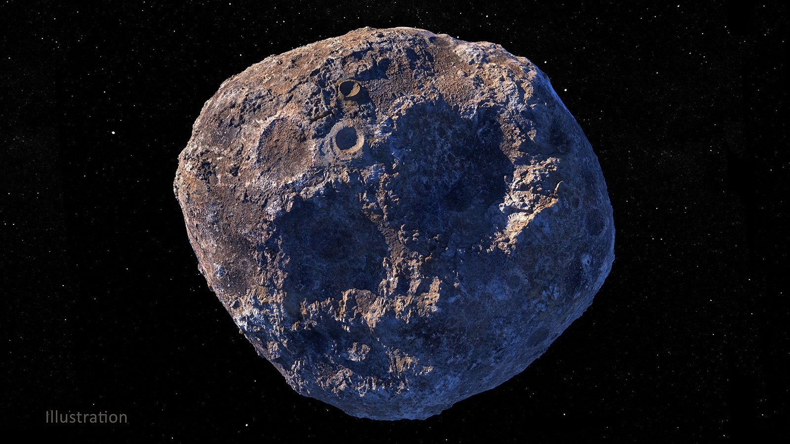

An asteroid is a minor planet—an object that is neither a true planet nor an identified comet— that orbits within the inner Solar System. They are rocky, metallic, or icy bodies with no atmosphere, classified as C-type (carbonaceous), M-type (metallic), or S-type (silicaceous). The size and shape of asteroids vary significantly, ranging from small rubble piles under a kilometer across and larger than meteoroids, to Ceres, a dwarf planet almost 1000 km in diameter. A body is classified as a comet, not an asteroid, if it shows a coma (tail) when warmed by solar radiation, although recent observations suggest a continuum between these types of bodies.